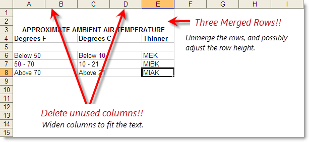
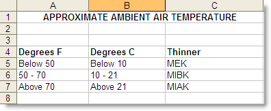

This command can also be executed from the SI Editor's Table's Right-click menu.
The Import Excel XML Spreadsheet command will import an existing Excel XML Spreadsheet into a Formatted Table.
 SpecsIntact can only import XML files. Before importing an Excel spreadsheet, ensure the file extension is '.xml' and not '.xls'. If you have an XLS workbook, save it as an 'Excel XML Spreadsheet' or 'Excel XML Spreadsheet 2003' before proceeding.
SpecsIntact can only import XML files. Before importing an Excel spreadsheet, ensure the file extension is '.xml' and not '.xls'. If you have an XLS workbook, save it as an 'Excel XML Spreadsheet' or 'Excel XML Spreadsheet 2003' before proceeding.
Some organizations have disabled the ability to Save Excel XML spreadsheets. The latest version of SpecsIntact allows you to easily import data by copying and pasting entire Excel spreadsheets or Word tables directly into SpecsIntact tables.
The success of importing an Excel XML Spreadsheet depends heavily on its formatting. It is important to ensure the spreadsheet is meticulously organized and formatted. Illustrated below is an example of a spreadsheet that can be a potential formatting problem when imported into a SpecsIntact table.
 For optimal import results, create the table in SpecsIntact with the exact number of columns and rows before importing data.
For optimal import results, create the table in SpecsIntact with the exact number of columns and rows before importing data.
Excel formatting that can cause adverse results when importing into a SpecsIntact table:

Suggested format changes after unmerging rows and deleting unused columns, as illustrated above:

Import Restrictions
- SpecsIntact will import spreadsheets containing up to 25 columns and 400 rows.
- Tables with 25 columns may be difficult to read with the SI Editor's margins. This is because the available space is limited to approximately 6.5 inches, resulting in very narrow columns.
 In the event of an error, click outside the table and use the Undo (Ctrl+Z) command. To learn more, see the Table Tips and Tricks topic.
In the event of an error, click outside the table and use the Undo (Ctrl+Z) command. To learn more, see the Table Tips and Tricks topic.
How to Use This Feature
 To Import An Excel Spreadsheet into a SpecsIntact Formatted Table:
To Import An Excel Spreadsheet into a SpecsIntact Formatted Table:
The steps provided assume you have already prepared and saved the Excel spreadsheet as an Excel XML Spreadsheet.
- In the Editing window, place your cursor where you want to insert a table, then perform one of the following:
- Select the Table menu and select Insert, then select Table
- Click the Formatted Table button on the Tagsbar
- Use the keyboard shortcut F9
- In the Insert Table window, select the Number of columns and Number of rows that mirror the existing Excel table
- Click OK
- If the table cell is selected, perform one of the following:
- Hover over the first cell, then right-click and select Import Excel XML Spreadsheet
- Select the Table menu and select Import Excel XML Spreadsheet
- To save the changes, click outside the table and perform one of the following:
- Click the Save button on the Toolbar
- Select the File menu and select Save
- Use the keyboard shortcut Ctrl+S
 Some adjustments to the format, column width, and row height may need to be made once the data has been imported into the table.
Some adjustments to the format, column width, and row height may need to be made once the data has been imported into the table.
To Copy and Paste An Excel Spreadsheet Into A SpecsIntact Formatted Table:
- In Microsoft Excel, highlight-and-copy the table
- Open a Section in the SI Editor
- In the Editing window, place your cursor where you want to insert a table, then perform one of the following:
- Select the Table menu and select Insert, then select Table
- Click the Formatted Table button on the Tagsbar
- Use the keyboard shortcut F9
- In the Insert Table window, select the Number of columns and Number of rows that mirror the existing Excel table
- Click OK
- Once the table is inserted, place your cursor in the first cell and press the ESC key to cancel Edit Mode, then perform one of the following:
- Right-click and select Paste
- Click the Paste button on the Toolbar
- Select the Edit Menu and select Paste
- Use the keyboard shortcut Ctrl+V
- To save the changes, click outside the table and perform one of the following:
- Click the Save button on the Toolbar
- Select the File menu and select Save
- Use the keyboard shortcut Ctrl+S
To Copy And Paste A Word Table Into A SpecsIntact Formatted Table:
- In Microsoft Word, highlight-and-copy the table
- Open a Section in the SI Editor
- In the Editing window, place your cursor where you want to insert a table, then perform one of the following:
- Select the Table menu and select Insert, then select Table
- Click the Formatted Table button on the Tagsbar
- Use the keyboard shortcut F9
- In the Insert Table window, select the Number of columns and Number of rows that mirror the existing Word table
- Click OK
- Once the table is inserted, place your cursor in the first cell and press the ESC key to cancel Edit Mode, then perform one of the following:
- Right-click and select Paste
- Click the Paste button on the Toolbar
- Select the Edit menu and select Paste
- Use the keyboard shortcut Ctrl+V
- To save the changes, click outside the table and perform one of the following:
- Click the Save button on the Toolbar
- Select the File menu and select Save
- Use the keyboard shortcut Ctrl+S
Additional Learning Tools
 Watch the Formatted Tables eLearning module within Chapter 3 - Getting Started.
Watch the Formatted Tables eLearning module within Chapter 3 - Getting Started.
Users are encouraged to visit the SpecsIntact Website's Support & Help Center for access to all of our User Tools, including Web-Based Help (containing Troubleshooting, Frequently Asked Questions (FAQs), Technical Notes, and Known Problems), eLearning Modules (video tutorials), and printable Guides.